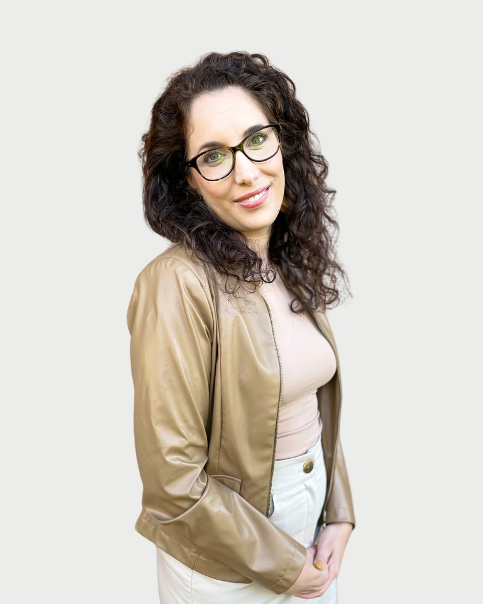

Regiszter 10 · Pszichológus
Dr. Váradi Zsófia
Bemutatkozás
Dr. Váradi Zsófia saját szavaival. Egy alkalom díja 15-20 ezer forint. A díjakról
Váradi Zsófia vagyok, szakorvos és képzésben lévő pszichoterapeuta. 14 éves kortól fogadom kamasz és felnőtt pácienseimet.
Munkám során elsődleges egy olyan biztonságot és elfogadást nyújtó terápiás kapcsolat kialakítása, amelyben a páciens hatékonyan tud gyógyulni és fejlődni.
Szakmai háttér
Pszichodinamikus (mélylélektani, feltáró) szemléletben gondolkodom, és elsődlegesen a katatím imaginatív pszichoterápia (KIP) módszerét használom a gyógyításban.
Mit jelent a mélylélektani alapokon nyugvó (dinamikus) megközelítés?
A pszichodinamikus szemlélet egyik alaptétele, hogy igazából mindannyian az önbecsapás nagymesterei vagyunk, és a legtöbben nem ismerjük igazán jól magunkat. Abban a hitben ringatjuk magunkat, hogy életünk minden pillanatában élünk választási szabadságunkkal, miközben valójában sokkal jobban korlátok közé vagyunk szorítva, mint gondolnánk. Személyes működésünket ugyanis nagymértékben a tudattalunk által írt forgatókönyv határozza meg. A dinamikus szemlélet egy másik fontos alapelve, hogy a felnőtt személyiség kialakulásában a csecsemő-és gyermekkor élményei döntő szerepet játszanak.
A dinamikus terápiák célja a tudattalanban és a múltban megbújó mozgatórugók feltárása, tudatos szintre emelése és átdolgozása.
Mi az a KIP?
A katatím imaginatív pszichoterápia (KIP) a dinamikus terápiák egyik fajtája. Nagyszerűsége abban rejlik, hogy a tudattalan tartalmakhoz való hozzáférés elősegítéséhez és azok átdolgozásához a módosult tudatállapotot (lásd még: relaxáció, hipnózis, éber álom) hívja segítségül, ami jelentősen növelheti a feltáró terápia hatékonyságát.
A páciens személyiségéhez és hozott problémájához alkalmazkodva használok további terápiás megközelítéseket is (támogató terápia, NLP, ego state). Munkámat folyamatos szakmai szupervízió, illetve egyéni és csoportos önismereti munka mellett végzem.
A kapcsolat az, ami gyógyítIrvin D. Yalom
Képzés és szakmai út
14 tétel. A képzések és a szupervízió az akkreditált szakképzőhely rendjében folynak. Mit jelent ez Önnek
Iskolai végzettség
Szakmai tapasztalatok
Tanítómesterek
- Fadgyas Ildikópszichiáter, kiképző pszichoterapeuta, az Integratív Pszichoterápiás Egyesület elnöke, szupervízor
- Daubner Bélapszichiáter, kiképző pszichoterapeuta
- Tóthné Varga Zsuzsannaklinikai szakpszichológus
- Csóka Monikacsecsemő-és gyermekgyógyász, egyetemi docens
Regiszter 10
Időpont Dr. Váradi Zsófianál
Az ügyfélszolgálat hétköznap 9 és 15 óra között egyeztet. Ha bizonytalan, hogy Ön kihez tartozik, azt is megbeszélik, és ha kell, más kollégát javasolnak.